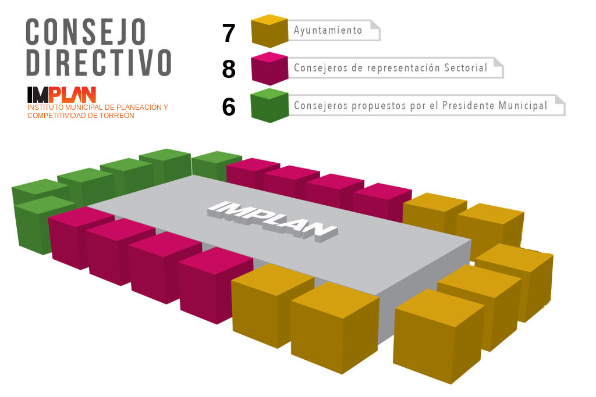

El Consejo Directivo está conformado de la siguiente manera:
| AYUNTAMIENTO | |
|---|---|
| Ing. Miguel Ángel Riquelme Solís | Presidente Municipal y Presidente del Consejo del IMPLAN |
| Lic. Eduardo Holguín | Director Ejecutivo del IMPLAN |
| Ing. Gabriel Calvillo Ceniceros | Titular Responsable del Área de Desarrollo Urbano del Ayuntamiento |
| M.C. Mario Valdéz Garza | Presidente de la Comisión de Urbanismo y Obras Públicas del Ayuntamiento |
| Lic. Miguel Mery Ayup | Presidente de la Comisión de Hacienda, Patrimonio y Cuenta Pública del Ayuntamiento |
| C. Sergio Lara Galván | Presidente de la Comisión de Desarrollo Económico del Ayuntamiento |
| Lic. Olivia Martínez Leyva | Presidente de la Comisión de Planeación y Competitividad |
| REPRESENTANTES SECTORIALES | |
| Arq. Tomás Galván Camacho | Cámara Mexicana de la Industria de la Construcción |
| Gildardo Magallanes Rayas | Colegio de Ingenieros Civiles de La Laguna A.C. |
| Carlos Fernández Gómez | Fomento Económico Laguna de Coahuila A.C. |
| Eduardo Castañeda Martínez | Consejo Lagunero de la Iniciativa Privada |
| Cecilia del Carmen Cardiel Escamilla | Consejo ONG’s de La Laguna A.C. |
| Ing. Ignacio Chong López | Consejo Lagunero del Agua A.C. |
| Miguel Ángel Cisneros Guerrero | CIESLAG |
| Martha Silvia Argüelles Molina | CIESLAG |
| PROPUESTA DEL CONSEJO MUNICIPAL DE DESARROLLO URBANO | |
| Javier Ramos Salas | Presidente del Consejo Municipal de Desarrollo Urbano |
| CIUDADANOS PROPUESTOS POR EL ALCALDE | |
| Victor Hugo Torres Romo | Colegio de Arquitectos |
| Eugenio Treviño Rodríguez | CANACINTRA |
| Martín López Méndez | ITESM |
| Rafael Rebollar | Peñoles |
| Carlos Rangel Orona | CANACO |
| Francisco Valdés Pérez Gazga | PRODENAZAS |